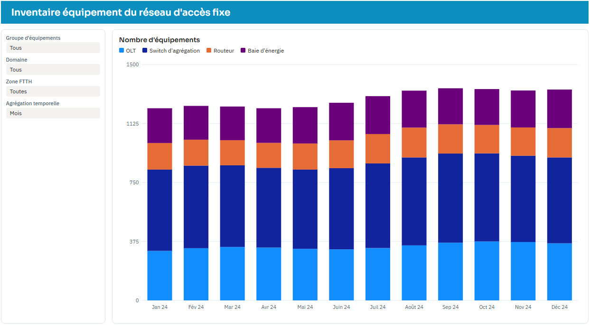
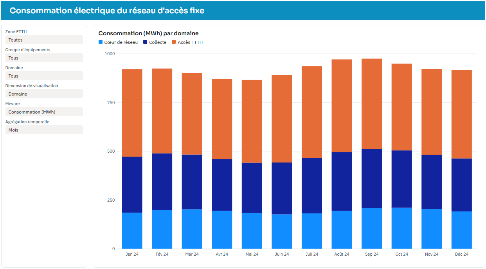
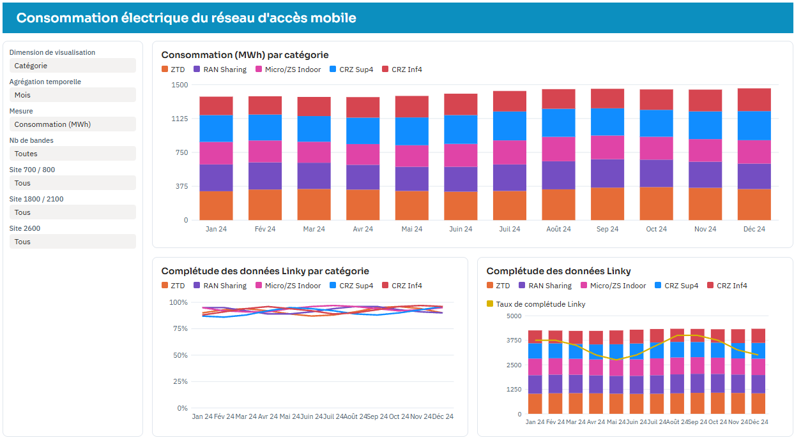
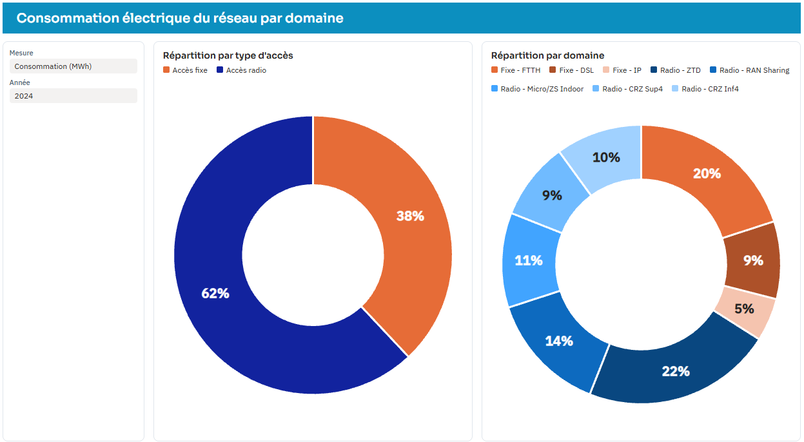
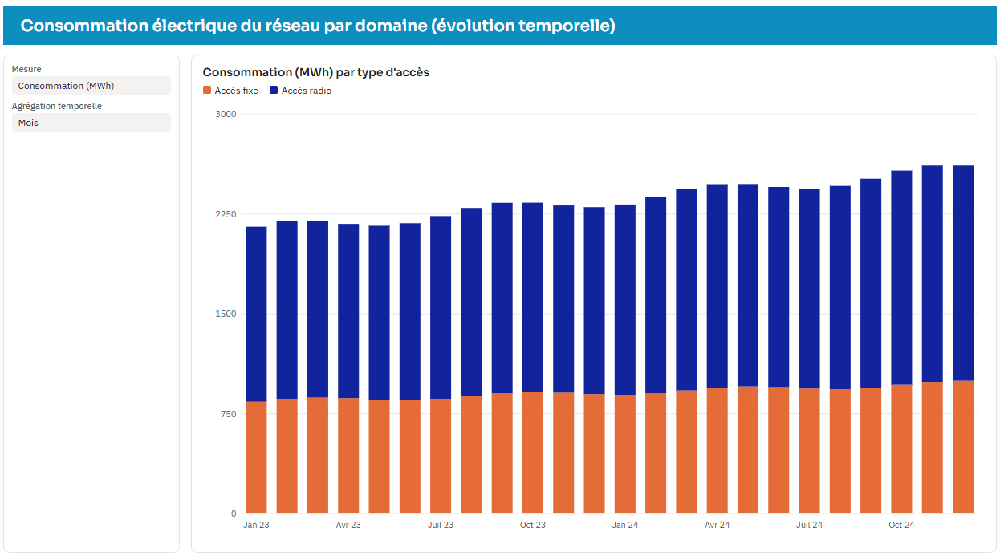

Conception de bout en bout du suivi énergétique des sites fixes et radio de
Bouygues telecom, du cadrage jusqu'au dashboard Power BI.
Power BI
Modélisation de données
Spécifications fonctionnelles et techniques
KPI
Tables agrégées
DAX
Le contexte
Bouygues Telecom voit sa consommation d'énergie augmenter fortement, au rythme
de la croissance de son réseau.
L'entreprise devait mieux la maîtriser pour optimiser ses dépenses. Elle a lancé
un projet de métrologie énergétique : un outil qui mesure, consolide
et rend lisible la consommation, pour la partie fixe comme pour la partie radio.
Le dashboard est la dernière phase d'un projet qui a démarré bien avant, dans les
systèmes techniques.
Mon rôle, étape par étape
Cadrage : définir le besoin, le périmètre fixe et radio et les attentes des métiers.
Étude des données : rechercher les données d'énergie dans les systèmes techniques et contacter les équipes de chaque système pour comprendre les données disponibles.
Spécifications : rédiger les spécifications fonctionnelles et techniques.
Règles de gestion : aider les métiers à identifier et à décrire leurs règles de gestion.
KPI : définir les indicateurs qui permettent de piloter la consommation.
Tables cibles : mettre en place les tables cibles qui reçoivent les données consolidées.
Tables agrégées : calculer les tables agrégées qui alimentent le reporting.
Tableau de bord : concevoir et développer le tableau de bord Power BI.
Compétences mises en œuvre
Analyse et cadrage du besoin
Recherche et compréhension de données multi-systèmes
Rédaction de spécifications fonctionnelles et techniques
Animation d'ateliers de règles de gestion
Définition de KPI
Modélisation : tables cibles et tables agrégées
Power BI : modèle, mesures DAX et visualisation
Les 5 pages du rapport
Le rapport compte 5 pages. Toutes partagent le même principe :
l'utilisateur choisit un indicateur, un niveau de regroupement
et une agrégation temporelle avec des filtres, et le graphique s'adapte.
Page 1 – Inventaire accès fixe
Quel parc d'équipements ?
Visuel : histogramme du nombre d'équipements par mois, découpé par catégorie. Une infobulle indique la catégorie.
Filtres : groupe d'équipements, domaine, zone FTTH et agrégation temporelle.
Utilité : suivre l'évolution du parc du réseau d'accès fixe, qui explique en partie l'évolution de la consommation.

Page 2 – Zoom consommation accès fixe
Combien consomme le réseau fixe ?
Visuel : histogramme mensuel de la mesure choisie, avec une couleur par domaine.
Filtres : zone FTTH, groupe d'équipements, domaine, mesure, dimension de visualisation et agrégation temporelle.
Utilité : un seul graphique répond à plusieurs questions : l'utilisateur change l'indicateur ou l'axe d'analyse sans changer de page.

Page 3 – Zoom consommation accès mobile
Combien consomme le réseau radio, et les données sont-elles fiables ?
Visuels : histogramme mensuel de la mesure choisie, par zone, et deux graphiques de complétude des données Linky : un par catégorie, l'autre combinant le nombre total de sites (colonnes) et le taux de complétude (courbe).
Filtres : nombre de bandes, présence des bandes de fréquence sur le site (700, 800, 1800, 2100, 2600), mesure, dimension de visualisation et agrégation temporelle.
Utilité : analyser la consommation selon la configuration technique du site et mesurer la qualité de la donnée remontée par les compteurs Linky.

Page 4 – Consommation du réseau par domaine
Quelle part pour chaque domaine ?
Visuels : un camembert et un anneau de répartition. Les infobulles affichent les cumuls fixe, radio et total.
Filtres : mesure et année.
Utilité : disposer d'une vue consolidée pour identifier où se concentre la consommation, entre fixe et radio et entre domaines.

Page 5 – Évolution temporelle par domaine
Comment évolue la consommation ?
Visuel : histogramme par mois, avec une couleur par type d'accès (fixe ou radio) et une hiérarchie de dates (année, mois).
Filtres : mesure et agrégation temporelle.
Utilité : repérer les tendances, les pics et l'effet de la croissance du réseau sur la consommation.

Les mesures DAX clés
J'ai conçu une couche de mesures qui rend le rapport flexible et fiable :
12 mesures, en 4 familles.
Sélection dynamique de l'indicateur
L'utilisateur choisit l'indicateur à afficher, et une même mesure pilote les
graphiques. Elle sert sur trois pages : accès fixe, accès mobile et évolution temporelle.
Mesure
Mesure_
Mesure_Sélectionnée
Cumuls fixe, radio et total
Affichés au survol des graphiques de répartition, pour comparer les deux réseaux
sans changer de page.
Cumul Fixe
Cumul Radio
Cumul
Cumul_Consommation_Fixe_
Cumul_Consommation_Radio_
Parts de répartition
Pourcentage de chaque domaine dans le total, qui s'adapte à la mesure choisie.
Pourcentage Légende Dynamique
Pourcentage_Mesure
Qualité des données Linky
Nombre de sites suivis et taux de complétude des données remontées par les
compteurs : un indicateur de fiabilité de la donnée, pour savoir quels sites
sont réellement couverts.
nb sites total
Taux de complétude Linky
Ces mesures s'appuient sur une table combinée qui rassemble les
données fixe et radio, et sur des tables de paramètres (mesure,
dimension de visualisation, agrégation temporelle) qui pilotent l'affichage.
Points techniques
Le modèle combine les données fixe et radio dans une table commune. La
sélection dynamique des mesures (une mesure unique dont le contenu
change selon le choix de l'utilisateur) et l'agrégation temporelle au choix
évitent de multiplier les pages et les visuels.
À propos des données : les captures présentées sont anonymisées ;
aucune valeur ne reflète les chiffres réels de l'entreprise.